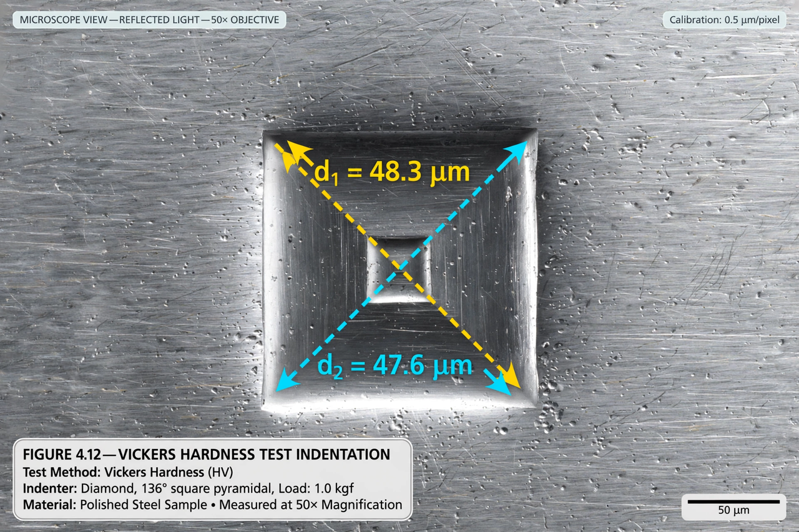

From Wikipedia, the free encyclopedia
The Vickers hardness test was developed in 1921 by Robert L. Smith and George E. Sandland at Vickers Ltd as an alternative to the Brinell method to measure the hardness of materials. The Vickers test is often easier to use than other hardness tests since the required calculations are independent of the size of the indenter, and the indenter can be used for all materials irrespective of hardness.

The basic principle, as with all common measures of hardness, is to observe a material's ability to resist plastic deformation from a standard source. The Vickers test can be used for all metals and has one of the widest scales among hardness tests. The unit of hardness given by the test is known as the Vickers Pyramid Number (HV) or Diamond Pyramid Hardness (DPH).
The indenter is a square-based diamond pyramid with an angle of 136° between opposite faces. A known load F is applied, the two diagonals of the resulting square impression are measured under a microscope, and HV is calculated as:
HV = 1.8544 × F / d²
where F is the load in kgf and d is the mean diagonal length in millimetres. Because the same geometry is used at all loads, Vickers hardness is (in theory) independent of load.
At small loads (grams to a few kilograms) the method becomes a microhardness test, useful for thin coatings, small parts and individual phases or grains in a microstructure.
Samples must be polished smooth and thick enough that the indentation does not interact with the substrate — a rule of thumb is that sample thickness should be at least 1.5 times the indentation diagonal.
See also: Indentation, Rockwell scale, Knoop hardness test.